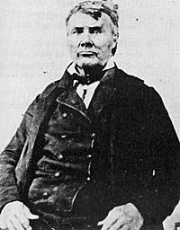
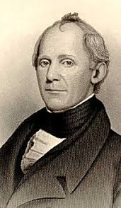
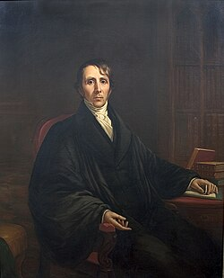
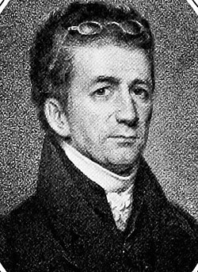
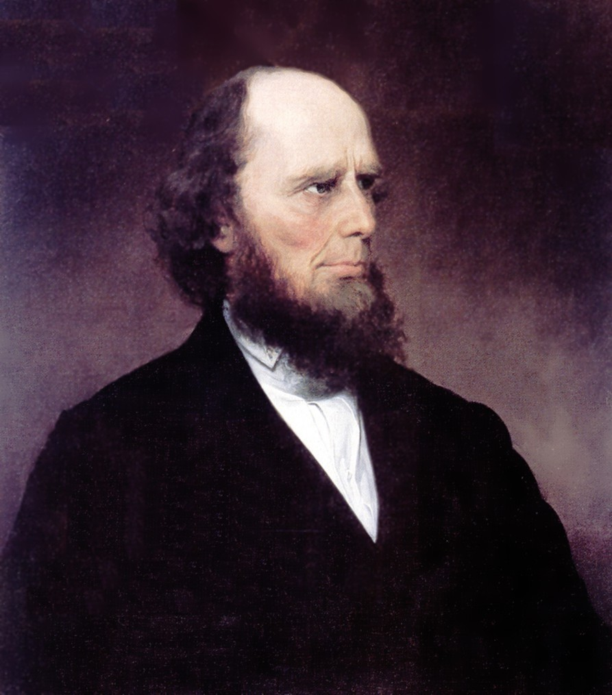
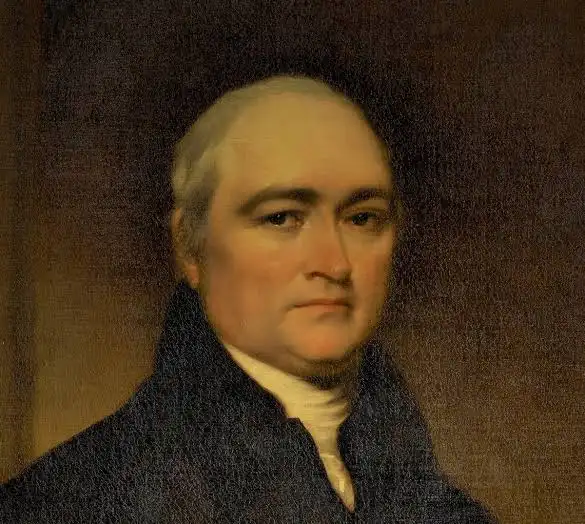

These individuals played major roles in shaping religious revival movements and Unitarian thought in early America.

Frontier preacher who traveled widely holding camp meetings.

Evangelist known for a more structured and controlled revival style.

Leading Unitarian thinker who promoted reason and moral religion.

Preacher who connected revival religion with moral reform movements.

Famous revival preacher known for emotional sermons and conversions.

Early leader of revivalism who helped spread religious ideas through education.